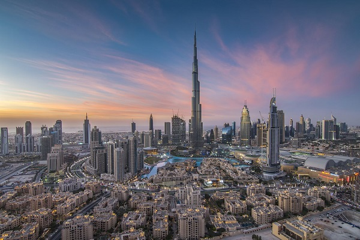
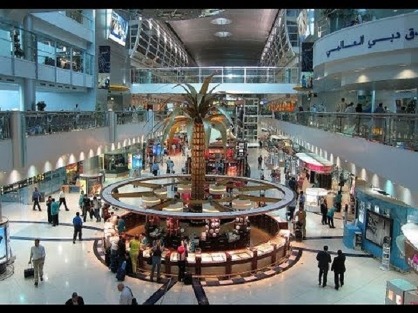

The City of Dubai is also the lifestyle hub for the entire region.

Although due to the heat it is mostly limited to indoor air-conditioned activities, nevertheless there are plenty entertainments ofall sorts including amazing shopping 
From a range of theme parks to private beach clubs, from incredibly opulent shopping malls to cinema complexes and an abundance of restaurants, from indoor snowboarding to the most remarkable music festivals – Dubai really does have it all.

Life in this city is non-stop and expats will often hear the word “hustle” thrown around when talking to their friends. No one can really escape the Dubai hustle.
So it’s crucial to be prepared to have a busy and often hectic routine, the city’s residents live a fast-pace life.